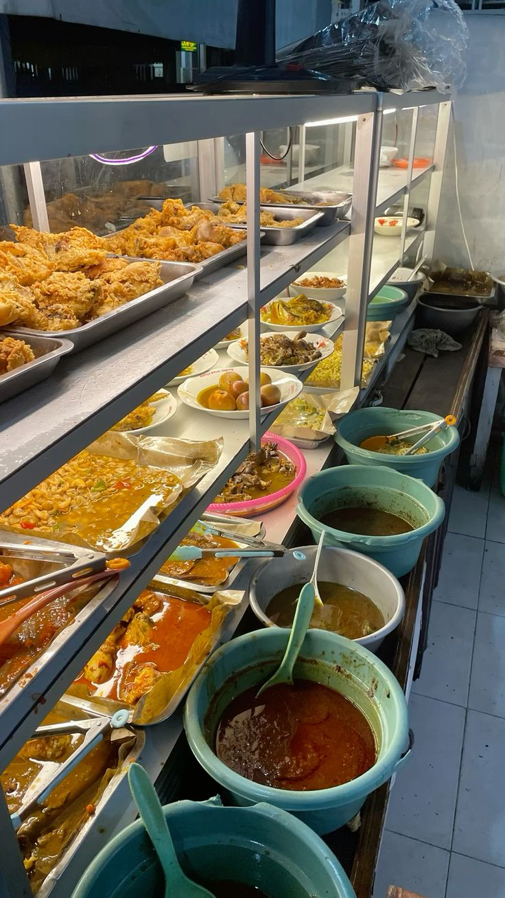

Temukan Rumah Makan yang Masih Buka di Malam Hari
WebGIS Rumah Makan Malam adalah proyek geoinformatika untuk memetakan rumah makan yang beroperasi setelah pukul 23.00 di wilayah perkotaan Kalimantan Selatan, sehingga pengguna dapat menemukan lokasi, jam operasional, dan kisaran harga dengan mudah.
Catatan: seluruh informasi rumah makan bergantung pada dataset yang dikumpulkan oleh tim proyek. Saat ini dataset belum dimuat, sehingga belum ada data lokasi yang ditampilkan.

Rumah makan yang beroperasi setelah pukul 23.00 WITA
Wilayah cakupan penelitian
Pilih wilayah untuk membuka peta dengan tampilan yang langsung diarahkan ke area tersebut.
Fitur yang direncanakan
Peta WebGIS
Lihat sebaran lokasi rumah makan pada peta interaktif setelah dataset spasial tersedia.
Filter jam operasional
Saring rumah makan berdasarkan jam tutup, mulai dari 23.00 hingga buka 24 jam.
Daftar terstruktur
Telusuri nama, alamat, jam operasional, dan kisaran harga dalam satu tabel.
Siap untuk data QGIS
Struktur data dirancang untuk menerima keluaran GeoJSON dari pengolahan di QGIS.